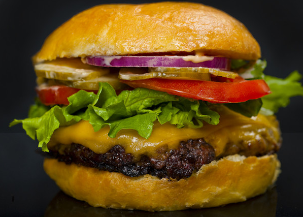

Healthy Burger

A very healthy AND flavorful burger with a little extra crunch
Ingredients
- 1kg lean ground beef
- 1 package dry onion soup mix
- 1 egg
- 2 teaspoons hot pepper sauce
- 2 teaspons Worcestershire sauce
- 1/4 teaspoon black pepper
- 100g rolled oats
Method
- Preheat an outdoor grill for medium high heat and lightly oil grate.
- In a large bowl, combine the beef, onion soup mix, egg, hot sauce and oats. Shape into 6 patties.
- Grill patties over medium high heat for 10 to 20 minutes, or to desired doneness.
Return to Main Page